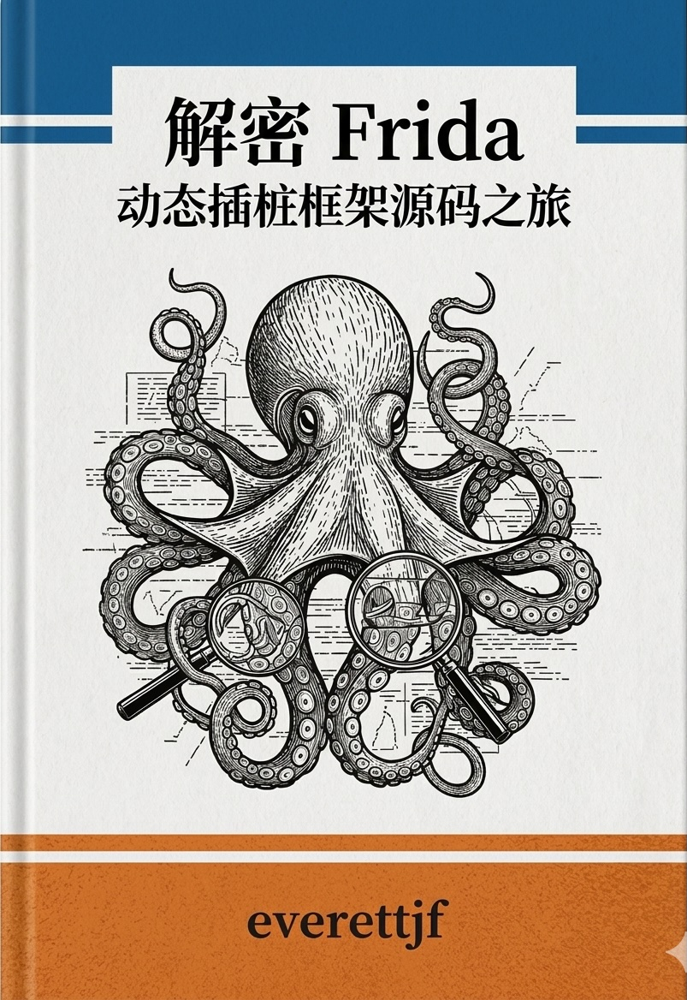

解密 Frida
动态插桩框架源码之旅
作者：everettjf
使用 Claude Code 分析源码
深度解析 Frida 动态插桩框架的架构与设计思路
30 章正文 | 3 个附录 | 150+ 代码示例 | 40+ 架构图
Frida 官网 | GitHub 仓库 | GitHub 组织
⚠️ <strong>本书由 Claude Code 分析 Frida 源码生成，人工校准仍在进行中，目前进度 1%。</strong>
关注微信公众号，探索更多有趣的技术以及 AI 前沿技术